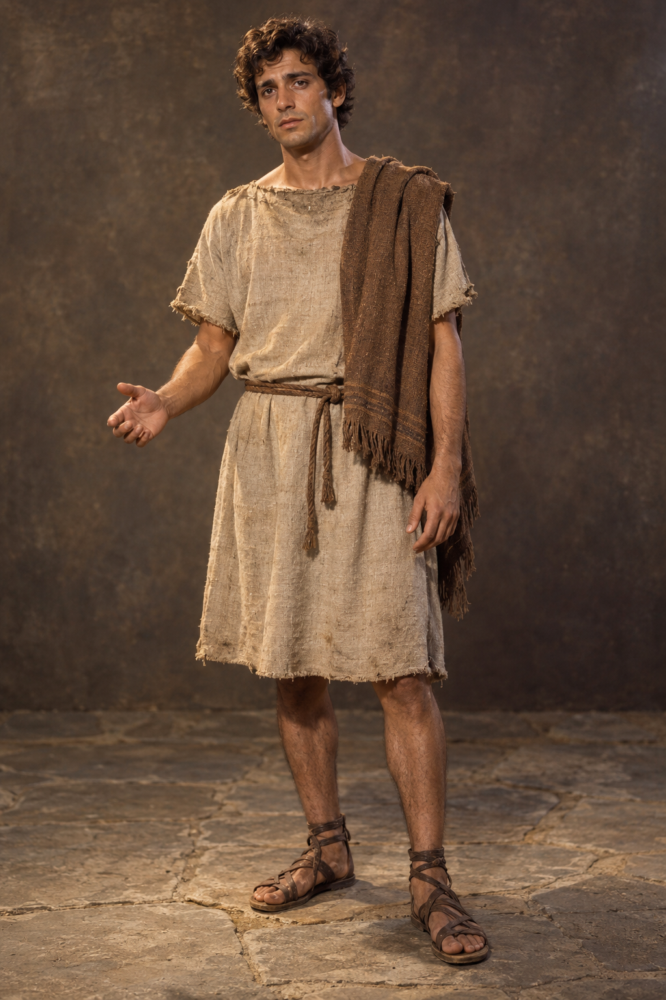
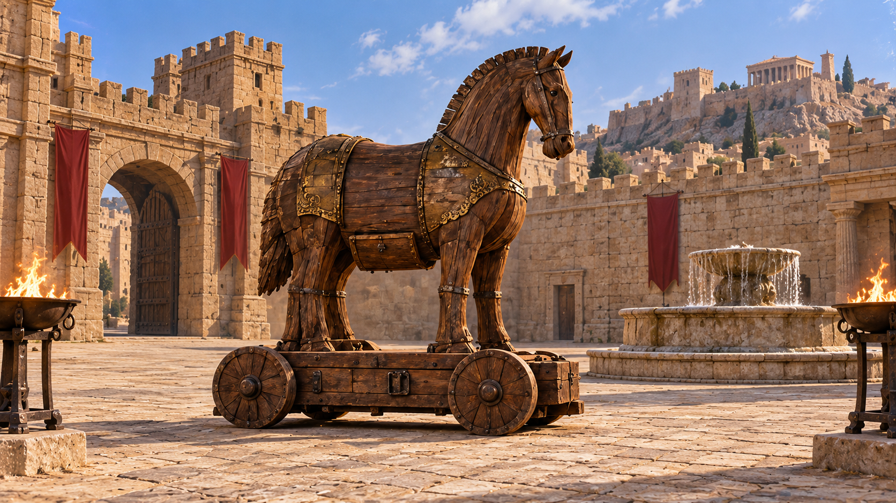

TROJAN HORSE · ASSET PREVIEW V1
木马计 · 人物与场景资产
三名主角，四类配角；木马、城门与同一广场的日暮夜。沿用邵氏历史电影的摄影与美术方向。
本批为单视图造型预览；已扩展剧本与20镜战斗分镜，视频尚未生成。点击图片查看原图。
三名主角
同一广场 · 日夜对照
拖动滑块，检查木马、舱门、喷泉、城门和火盆的位置与光照。

配角代表
守卫、搬运者、市民与希腊随队士兵分别使用独立图片。
三名主角，四类配角；木马、城门与同一广场的日暮夜。沿用邵氏历史电影的摄影与美术方向。
本批为单视图造型预览；已扩展剧本与20镜战斗分镜，视频尚未生成。点击图片查看原图。
拖动滑块，检查木马、舱门、喷泉、城门和火盆的位置与光照。

守卫、搬运者、市民与希腊随队士兵分别使用独立图片。